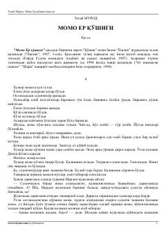

MЕArmiyadan o'zgargan qiyofada qaytgan yigit va uning ota-onasi o'rtasidagi ziddiyat haqidagi ta'sirli qissa.
Ushbu qissada armiyadan qaytgan yolg'iz o'g'ilning o'zgarib ketgani, ota-onasining tili va urf-odatlarini unutib, o'zini o'zgacha tutishi tufayli oilada yuzaga kelgan tushunmovchiliklar ta'sirli hikoya qilinadi. Asar milliy o'zlik, ona tiliga hurmat va ota-ona va farzand munosabatlari kabi muhim mavzularni ochib beradi. Yozuvchining o'ziga xos uslubi va teran psixologik tahlillari kitobxonni o'ylantiradi.